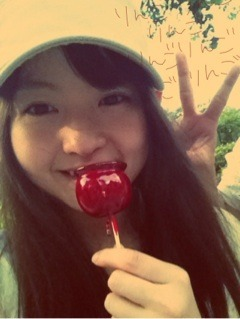

| 2012/07 16 Mon | 178回目*marika |
いつも読んでくださってる方、
初めて読んでくださった方、
コメントしてくださった方、
ありがとうございます！
HD4の伊藤万理華です
 きゃ
きゃ
きゃ
鼻炎ツライ
ツライ
...「ツライ」って今流行ってない⁇
今日はOffでした。
1人で映画観た後、

友達とお祭り行ってきた
 ♪
♪
♪
りんごの飴ちゃん。
見た目かわいい
浴衣着たい。
でも持ってない

モダンな柄の浴衣ほしいなー
 ...
...
...
*****

お好み焼き食べに行ったとき

写真反転しとる

ちゅー
せっいたーん

前私のこと紹介してたね。
童顔童顔てばかにしてくるけど、
それで私がすねたら←
ぎゅーしてくれる
 笑
笑
笑
かわいいのぉ

*****
3rdシングル「走れ！Bicycle」MV
乃木どこで公開されましたね

おしゃれでカラフルで...
めっちゃかわいかった

みなさんも気になったと思います...
もうひとつの衣装。
みんなボブやマッシュのウィッグ
かぶりました。

似合ってる⁇
ピンクのカチューシャ×ボブ
この衣装むちゃくちゃかわいくて
持って帰りたかったです

では明日も元気に頑張りまりか‼
まりか
コメント(167)
2012/07/16 21:48